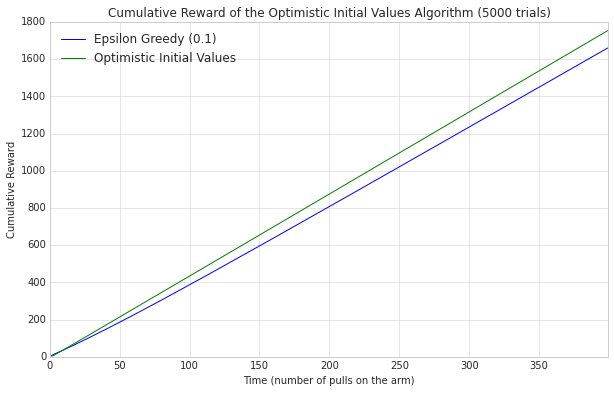
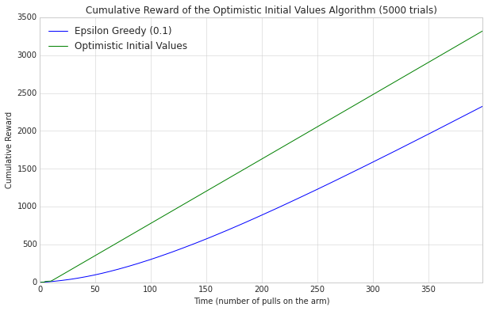
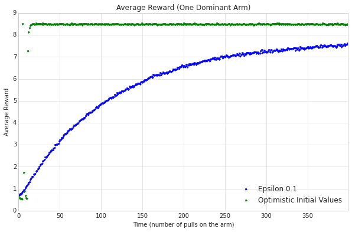

Assessing the Performance
1 Introduction
As with the Epsilon-Greedy algorithm I'm going to use the Cumulative Reward as the metric. In this case we don't really have a parameter to tune.
2 Imports
The dependencies.
# python standard library from datetime import datetime # pypi from numba import jit import numpy import pandas import matplotlib.pyplot as plot import seaborn # this project from optimistic_initial_values import OptimisticInitialValues from epsilon_greedy_normal import EpsilonGreedyNormal
3 Set-up the Plotting
This will enable the plotting and set the style.
%matplotlib inline seaborn.set_style("whitegrid")
4 Running the Assessment
@jit def cumulative_reward(agent, times=5000, trials=400): """this generates the cumulative reward as the agent pulls the arms Args: agent: implementation that selects and updates the arms trials (int): number of times to train the agent times (int): length of time to train the agent Returns: numpy.array: average cumulative rewards over time """ cumulative_rewards = numpy.zeros(times) for trial in range(trials): for time in range(times): arm = agent.select_arm() agent.update(arm) cumulative_rewards[time] += agent.total_reward agent.reset() return cumulative_rewards/trials
def plot_cumulative(cumulative): """generates and plots cumulative average Args: cumulative (pandas.DataFrame): data to plot """ figure = plot.figure(figsize=(10, 6)) axe = figure.gca() axe.set_title("Cumulative Reward of the Optimistic Initial Values Algorithm ({} trials)".format(TRIALS)) axe.set_xlabel("Time (number of pulls on the arm)") axe.set_ylabel("Cumulative Reward") cumulative.plot(ax=axe) return
TRIALS = 5000 TIMES = 400 similar_payout_rates = numpy.arange(1.0, 6.0) numpy.random.shuffle(similar_payout_rates) one_good_arm_rates = numpy.array([1.0] * 10 + [9.0]) numpy.random.shuffle(one_good_arm_rates)
4.1 Similar Arms
This will create a range where each arm only differs by 0.1
optimistic_agent = OptimisticInitialValues(similar_payout_rates, 10.0) data = {} data["Optimistic Initial Values"] = cumulative_reward(optimistic_agent, trials=TRIALS, times=TIMES) epsilon_agent = EpsilonGreedyNormal(0.1, similar_payout_rates) data["Epsilon Greedy (0.1)"] = cumulative_reward(epsilon_agent, trials=TRIALS, times=TIMES) data = pandas.DataFrame.from_dict(data) plot_cumulative(data)
The Optimistic Initial Values agent does better than the Epsilon Greedy, as you would expect (since it eventually stops exploring). But it looks suspisciously linear.
4.2 One Good Arm
Lets see how it goes when one arm dominates the payouts.
numpy.random.shuffle(one_good_arm_rates) optimistic_agent = OptimisticInitialValues(one_good_arm_rates, 10.) data = {} data["Optimistic Initial Values"] = cumulative_reward(optimistic_agent, trials=TRIALS, times=TIMES) epsilon_agent = EpsilonGreedyNormal(0.1, one_good_arm_rates) data["Epsilon Greedy (0.1)"] = cumulative_reward(epsilon_agent, trials=TRIALS, times=TIMES) data = pandas.DataFrame.from_dict(data) plot_cumulative(data)
It looks like the optimistic agent does even better with one dominant arm. Likely because it found it quick enough that always exploiting it gives it a huge advantage over the epsilon greedy, which never stops exploring.
@jit def average_reward(agent, times=1000, trials=100): """this generates the average reward for the trials over time Args: trials (int): number of times to train the agent times (int): length of time to train the agent Returns: numpy.array: the average reward """ average_rewards = numpy.zeros(times) for trial in range(trials): for time in range(times): arm = agent.select_arm() old_reward = agent.total_reward agent.update(arm) average_rewards[time] += (agent.total_reward - old_reward) agent.reset() return average_rewards/trials
data = {} data["Optimistic Initial Values"] = average_reward(optimistic_agent, TIMES, TRIALS) data["Epsilon 0.1"] = average_reward(epsilon_agent, TIMES, TRIALS)
averages = pandas.DataFrame.from_dict(data)
figure = plot.figure(figsize=(10, 6)) axe = figure.gca() axe.set_title("Average Reward (One Dominant Arm)") axe.set_xlabel("Time (number of pulls on the arm)") axe.set_ylabel("Average Reward") averages.plot(ax=axe, marker='.', linestyle="None")
It looks like there was a brief period where the Epsilon Greedy did better, but the Optimistic agent settled in fairly quickly.